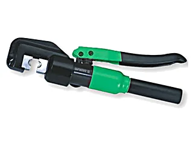
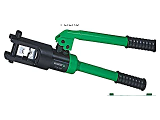
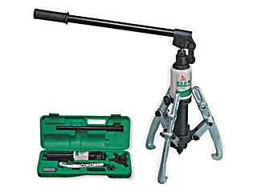
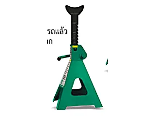

เครื่องมือไฮดรอลิคสำหรับงานหนัก ชุดคีมย้ำหางปลาไฮดรอลิคแรงกด 8 ตันพร้อมดายหลายขนาด ชุดเครื่องดูดลูกปืนและมูเล่ย์แบบไฮดรอลิค และขาตั้งรถยนต์รับน้ำหนัก
| รูป | รหัส | ชื่อสินค้า | ขนาด | จำนวน/ลัง | วัสดุ |
|---|---|---|---|---|---|
 |
WS-YQK70 | ชุดคีมย้ำหางปลาไฮดรอลิค 8ตันHYDRAULIC CRIMPING PLIERS | 5 |
| รูป | รหัส | ชื่อสินค้า | ขนาด | จำนวน/ลัง | วัสดุ |
|---|---|---|---|---|---|
 |
WS-YQK300 | ชุดคีมย้ำไฮดรอลิค 16ตันHYDRAULIC CRIMPING PLIERS | 4 |
| รูป | รหัส | ชื่อสินค้า | ขนาด | จำนวน/ลัง | วัสดุ |
|---|---|---|---|---|---|
 |
WS-5T | ชุดเครื่องดูดลูกปืน มูเล่ย์ ไฮดรอลิกMULTI-FUNCTIONAL HYDRAULIC GEAR PULLER ทุกเบอร์ในตระกูลนี้หน้าตาเหมือนกัน ต่างที่ขนาด — ดูขนาดจริงที่คอลัมน์ขนาด |
5T | 2 | |
| WS-10T | 10T | 2 |
| รูป | รหัส | ชื่อสินค้า | ขนาด | จำนวน/ลัง | วัสดุ |
|---|---|---|---|---|---|
 |
W2604A | ขาตั้งรถยนต์ 2 ชิ้นSAFETY STAND ทุกเบอร์ในตระกูลนี้หน้าตาเหมือนกัน ต่างที่ขนาด — ดูขนาดจริงที่คอลัมน์ขนาด ยกต่ำสุด (MIN HEIGHT) 280mm / ยกสูงสุด (MAX HEIGHT) 425mm |
2T | 2 | |
| W2604B | ยกต่ำสุด (MIN HEIGHT) 285mm / ยกสูงสุด (MAX HEIGHT) 425mm |
3T | 2 | ||
| W2604C | ยกต่ำสุด (MIN HEIGHT) 395mm / ยกสูงสุด (MAX HEIGHT) 605mm |
6T | 2 | ||
| W2604D | ยกต่ำสุด (MIN HEIGHT) 487mm / ยกสูงสุด (MAX HEIGHT) 748mm |
12T | 2 |
กดที่รหัสสินค้าในตาราง ระบบจะเปิด LINE พร้อมข้อความให้แล้ว หรือทักมาบอกรายการที่ต้องการก็ได้ ทีมงานเช็คสต็อกและแจ้งราคาส่งให้